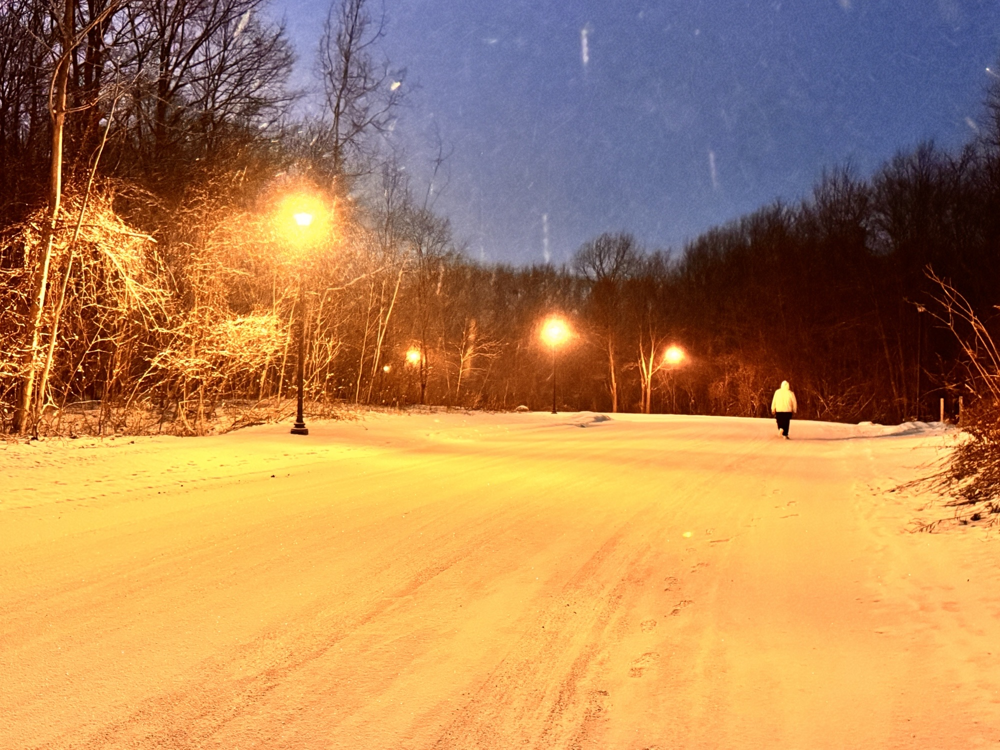
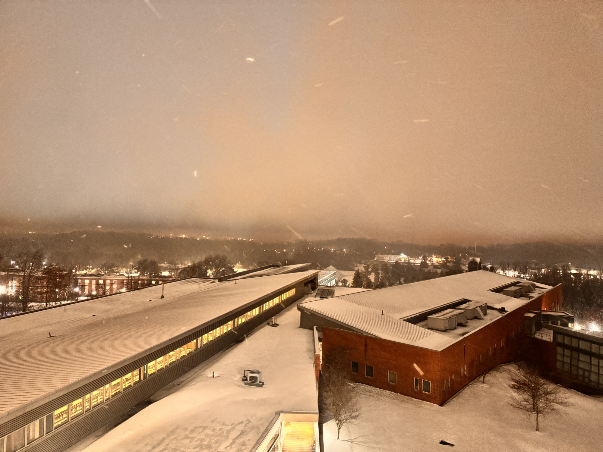
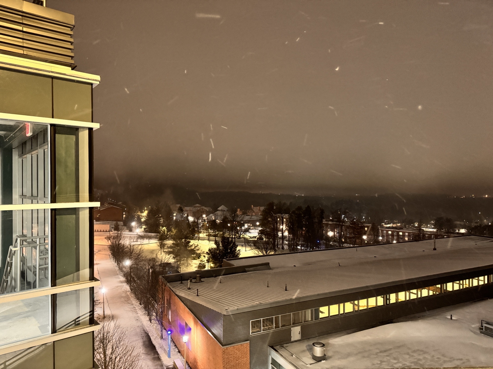
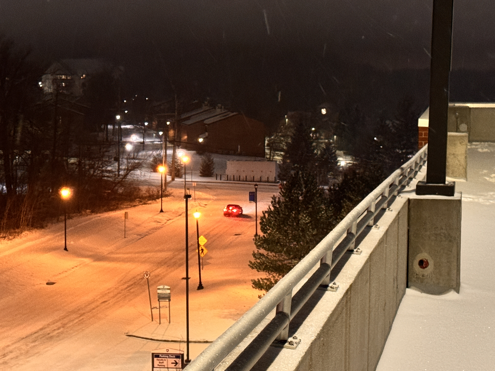
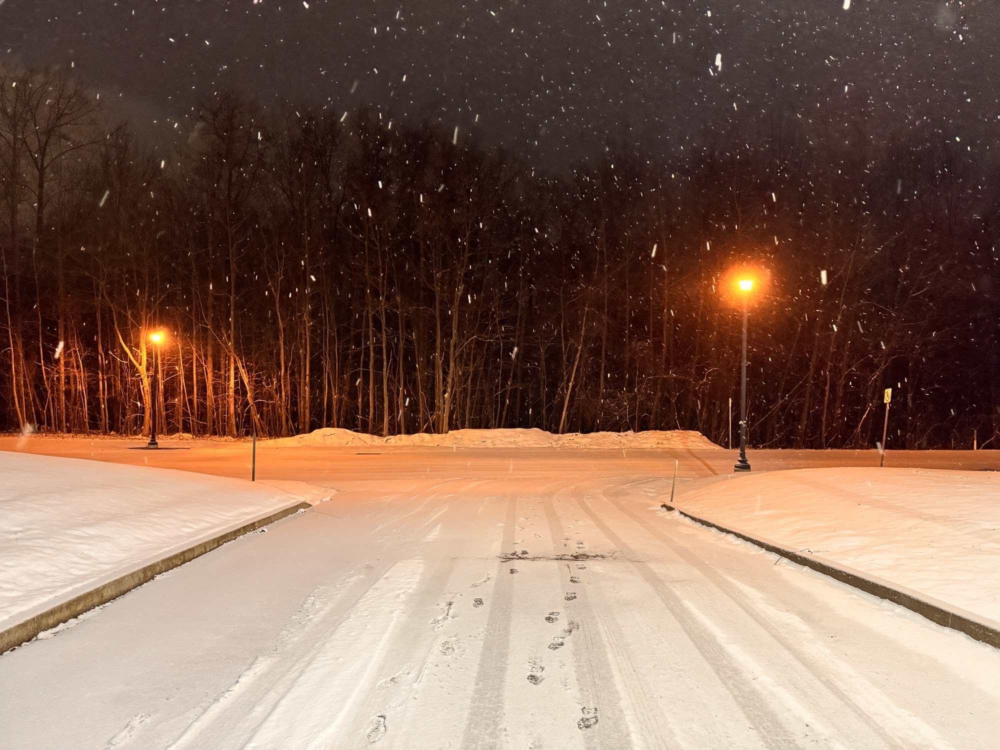
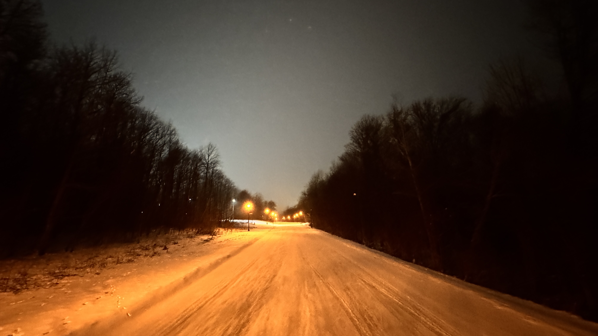

Here are some of my favorite pictures that I've taken most recently.
This one might be my favorite picture that I've taken recently. It's of my friend and everyone
He's shown it too has told him to make it his profile picture.


Picture of the top of Burke.

Also Burke but different angle.

Low exposure shot of a car driving by.


This one felt kinda liminal to me.